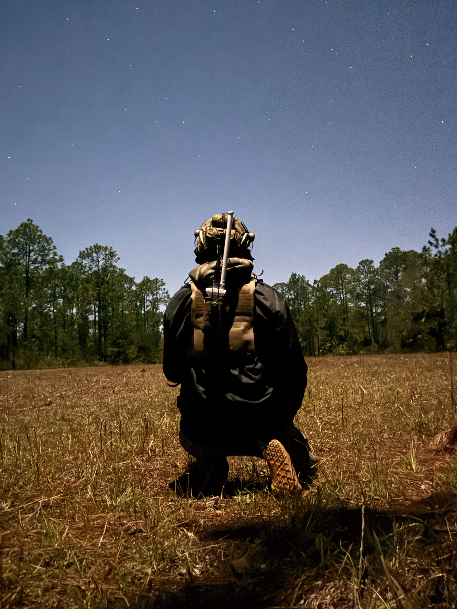

Nucleus — WiFi Mesh + LoRa with Native ATAK Integration
The Nucleus is a portable mesh node with two radios running parallel mesh networks — a high-speed Wi-Fi IP mesh and a slower, longer-ranged Meshtastic-based LoRa mesh. Connect your EUD and ATAK works at full speed — situational awareness (SA), chat, pictures, voice, and video streaming with no plugins and no external infrastructure.
The Nucleus automatically listens for ATAK traffic on the local network and sends it over the long-range LoRa radio in parallel to the Wi-Fi mesh — positions, chat, markers, routes, and shapes reach teammates miles beyond Wi-Fi range with zero configuration on the phone.
Run a portable OpenTAKServer directly on a Nucleus node for centralized SA, data packages, and video distribution in the field.

The Nucleus

ATAK Integration
Native ATAK Over WiFi Mesh
ATAK works out of the box over the WiFi mesh via standard multicast. SA, chat, pictures, routes, and data packages at ~30 Mbps — the way ATAK was built to run. No plugins, no TAKserver required for basic SA.
LoRa CoT Bridge
A built-in daemon transparently bridges ATAK SA and chat over Meshtastic LoRa. No plugin needed on the phone — the Nucleus intercepts multicast on the LAN and forwards it over LoRa automatically. Tested to 8+ miles with line of sight.
ATAK Voice Over Mesh
The ATAK voice plugin works natively across the WiFi mesh. Voice, contact discovery, and multi-channel support all route across the mesh network without additional configuration.
Video Streaming
When OpenTAKServer is installed, its built-in MediaMTX RTSP server enables video streaming from OpenTAK ICU to all ATAK clients on the mesh. H.264 video with AAC audio.
Portable OpenTAKServer
Run OpenTAKServer directly on a Nucleus node. Centralized SA, data packages, and video distribution — all on portable, battery-powered hardware with no external infrastructure.
WPA3 Encrypted Mesh
802.11s WiFi mesh with WPA3 encryption. Auto-healing topology that reroutes around failures. ~30 Mbps close range, 1–5 Mbps out to 1–3 miles with elevation and LoS.
Additional Capabilities
Meshtastic LoRa Radio
Onboard RAK4631 LoRa radio running Meshtastic firmware. Switch between CoT Bridge mode and BLE mode (for the Meshtastic phone app) via the web UI.
Reticulum Transport
Onboard transport for Reticulum applications like Sideband and MeshChat. Decentralized encrypted messaging over the mesh.
COTS Components
All off-the-shelf, user-replaceable parts with 3D-printed enclosures. Linux-based — add services or modify with basic Linux knowledge.